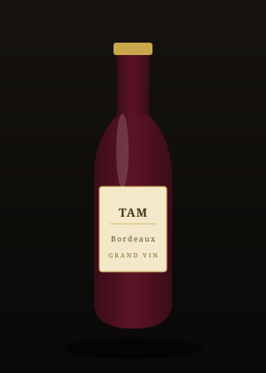

Maridajes con gastronomía africana & vinos
N'dolè & Haut-Médoc: el maridaje fundador
Por qué la amargura noble del n'dolè camerunés llama a la estructura tánica de un gran Médoc — análisis y consejos de servicio.
Leer el artículo →